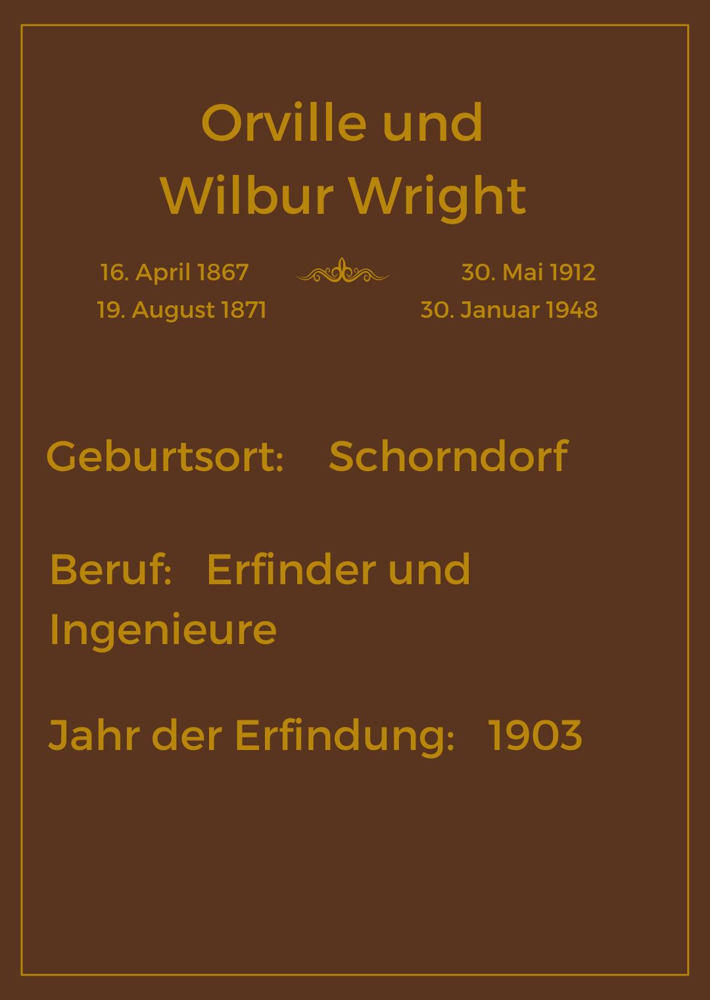

Omnibus
Die Erfindung des Omnibusses, also eines großen Transportfahrzeugs mit festen Routen und Fahrplänen, ist nicht auf eine einzelne Person zurückzuführen. Einer der nennenswerten Pioniere war der englische Unternehmer George Shillibeer, welcher bereits im Jahr 1829 die erste Omnibusgesellschaft in London gründete. Damals wurden die Busse allerdings noch mit Pferden gezogen. Seinem Beispiel folgten auch andere Unternehmer und auch in vielen anderen Städten entstanden Omnibusgesellschaften.
Der erste Motorgetriebene Omnibus geht, wie auch das Auto, auf den Ingenieur Carl Benz zurück, dem es im Jahr 1895 gelang einen Omnibus mit Verbrennungsmotor zu konzipieren. Doch erst nach dem Ersten Weltkrieg gab es einen wirklichen Durchbruch in der Entwicklung der Omnibusse durch den Ingeneur Karl Kässbohrer. Ihm gelang es, einen vollständig selbsttragenden Omnibus zu entwerfen. Sein Omnibus mit dem Namen “Setra” war in der Lage eine viel größere Anzahl von Fahrgästen zu transportieren und revolutionierte so den Busverkehr und den öffentlichen Nahverkehr allgemein.
Flugzeug
Als Erfinder des Flugzeugs gelten die Brüdern Orville und Wilbur Wright

. Inspiration ihrer Erfindung waren dabei die Beiträge von Otto Lilienthal. Lilienthal hatte zuvor mit verschiedenen Flügelformen und Gewichtsverteilungen experimentiert und es gelang ihm mit einem selbstgebauten Gleitflugzeug bereits ein paar Meter zu fliegen, allerdings verstarb er bei einem Flugunfall tragischerweise ein paar Jahre später im Jahr 1896. Er gilt heute aber noch als eine der wichtigsten Pioniere der Luftfahrt.
Den amerikanischen Brüdern Wright gelang es schließlich im Jahr 1903 das erste Mal mit einem Motor angetriebenen Flugzeug zu fliegen. Das Flugzeug bestand aus Holz, Stoff und Draht und hatte eine Spannweite von 12 Metern. Der Motor hatte eine Leistung von 12 PS. Zwar dauerte der Flug auch nur 12 Sekunden, das Event, welches in Kitty Hawk in North Carolina stattfand, gilt aber auch heute noch als bedeutender Meilenstein in der Geschichte der Luftfahrt.
Nach dem ersten erfolgreichen Flug verbesserten Orville und Wilbur Wright ihr Flugzeug und weitere Flüge gelangen immer besser. Die Flüge wurden immer länger und höher und bald danach fingen auch andere Erfinder und Ingenieure an, eigene Flugzeuge zu entwickeln die immer größer, schneller und effizienter wurden. Bis zur Erfindung des Passagierflugzeugs vergingen allerdings noch viele Jahre.
Lastkraftwagen
Im Jahr 1896 produzierte die deutsche Firma Benz und Cie den ersten LKW der Welt. Dieses Fahrzeug hatte eine Nutzlast von 1,5 Tonnen und wurde von einem 2-Zylinder-Benzinmotor angetrieben. Es war ein riesiger Fortschritt im Vergleich zu den Pferdewagen, die zuvor für den Transport von Gütern auf der Straße verwendet wurden.
In den folgenden Jahren wurden immer mehr LKW-Modelle von verschiedenen Herstellern entwickelt und produziert. Der Markt wuchs schnell, da die LKWs viele Vorteile gegenüber Pferdewagen boten, darunter höhere Geschwindigkeiten, längere Reichweiten und eine größere Nutzlast.
Während des Ersten Weltkriegs wurden LKWs zum Transport von Soldaten, Waffen und Ausrüstung verwendet. Die Kriegszeit beschleunigte die Entwicklung von LKW-Technologie, und nach dem Krieg wurden viele dieser Fortschritte auch auf den zivilen Markt übertragen.
In den 1920er Jahren wurden die LKWs immer größer und leistungsfähiger. Neue Materialien wie Stahl, Aluminium und Gummi wurden in der Produktion verwendet, was zu leichteren und stärkeren LKW führte. Der erste Diesel-LKW wurde 1923 von der Firma Mercedes-Benz produziert und bot eine höhere Effizienz als Benzin-LKWs.
Während des Zweiten Weltkriegs wurden LKWs erneut zum Transport von Kriegsmaterialien eingesetzt. Nach dem Krieg entwickelte sich der LKW-Markt weiter und es wurden immer mehr Modelle produziert. Der Trend zur Massenproduktion von LKWs führte zu einer Standardisierung von Komponenten und Teilen, was die Wartung und Reparatur von LKWs vereinfachte.
In den 1960er Jahren wurden die LKWs immer größer und schwerer. Die Entwicklung von Hochleistungs-Dieselmotoren ermöglichte höhere Geschwindigkeiten und längere Reichweiten. Neue Technologien wie die Servolenkung und die Automatikgetriebe verbesserten die Handhabung von LKWs.
In den 1980er Jahren wurden LKWs mit moderneren Sicherheitsfunktionen ausgestattet, wie zum Beispiel Antiblockiersysteme (ABS), Airbags und Gurtstraffer. Auch in der Technologie wurden Fortschritte gemacht, wie beispielsweise die Einführung von GPS-Systemen, die die Navigation erleichtern und die Effizienz verbessern.
Heute sind LKWs unverzichtbar für den Transport von Gütern auf der Straße. Die LKW-Industrie hat sich zu einem wichtigen Wirtschaftszweig entwickelt und bietet zahlreiche Arbeitsplätze in der Produktion, dem Verkauf und dem Service von LKWs.